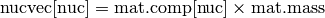

Materials – pyne.material¶
This module contains the Material class, which is used to represent nuclear materials throughout PyNE.
All functionality may be found in the material package:
from pyne.material import Material
Materials are the primary container for radionuclides. They map nuclides to mass weights. In many ways they take inspiration from numpy arrays and python dictionaries. Materials have two main attributes which define them.
- comp: a normalized composition mapping from nuclides (zzaaam-ints) to mass-weights (floats).
- mass: the mass of the material.
By keeping the mass and the composition separate, operations that only affect one attribute may be performed independent of the other. Additionally, most of the functionality is implemented in a C++ class by the same name, so this interface is very fast and light-weight. Materials may be initialized in a number of different ways. For example, initializing from dictionaries of compositions are shown below.
In [1]: from pyne.material import Material
In [2]: leu = Material({'U238': 0.96, 'U235': 0.04}, 42, 'LEU')
In [3]: leu
Out[3]: pyne.material.Material({922350: 0.04, 922380: 0.96}, 42.0, 'LEU')
In [4]: nucvec = {10010: 1.0, 80160: 1.0, 691690: 1.0, 922350: 1.0,
...: 922380: 1.0, 942390: 1.0, 942410: 1.0, 952420: 1.0,
...: 962440: 1.0}
In [5]: mat = Material(nucvec)
In [6]: print mat
Material:
mass = 9.0
----------
H1 0.111111111111
O16 0.111111111111
TM169 0.111111111111
U235 0.111111111111
U238 0.111111111111
PU239 0.111111111111
PU241 0.111111111111
AM242 0.111111111111
CM244 0.111111111111
Materials may also be initialized from plain text or HDF5 files (see Material.load_from_text() and Material.load_from_hdf5()). Once you have a Material instance, you can always obtain the unnormalized mass vector through Material.mult_by_mass(). Normalization routines to normalize the mass Material.normalize() or the composition Material.norm_comp() are also available.
In [7]: leu.mult_by_mass()
Out[7]: {922350: 1.68, 922380: 40.32}
In [8]: mat.normalize()
In [9]: mat.mult_by_mass()
Out[9]: {10010: 0.111111111111, 80160: 0.111111111111, 691690: 0.111111111111,
...: 922350: 0.111111111111, 922380: 0.111111111111, 942390: 0.111111111111,
...: 942410: 0.111111111111, 952420: 0.111111111111, 962440: 0.111111111111}
In [10]: mat.mass
Out[10]: 1.0
Furthermore, various arithmetic operations between Materials and numeric types are also defined. Adding two Materials together will return a new Material whose values are the weighted union of the two original. Multiplying a Material by 2, however, will simply double the mass.
In [11]: other_mat = mat * 2
In [12]: other_mat
Out[12]: pyne.material.Material({10010: 0.111111111111, 80160: 0.111111111111, 691690: 0.111111111111,
...: 922350: 0.111111111111, 922380: 0.111111111111, 942390: 0.111111111111,
...: 942410: 0.111111111111, 952420: 0.111111111111, 962440: 0.111111111111},
...: 2.0, '')
In [13]: other_mat.mass
Out[13]: 2.0
In [14]: weird_mat = leu + mat * 18
In [15]: print weird_mat
Material:
mass = 60.0
----------
H1 0.0333333333333
O16 0.0333333333333
TM169 0.0333333333333
U235 0.0613333333333
U238 0.705333333333
PU239 0.0333333333333
PU241 0.0333333333333
AM242 0.0333333333333
CM244 0.0333333333333
You may also change the attributes of a material directly without generating a new material instance.
In [16]: other_mat.mass = 10
In [17]: other_mat.name = "Other Material"
In [18]: other_mat.comp = {'H2': 3, 922350: 15.0}
In [19]: print other_mat
Material: Other Material
mass = 10.0
------------------------
H2 3.0
U235 15.0
Of course when you do this you have to be careful because the composition and mass may now be out of sync. This may always be fixed with normalization.
In [20]: other_mat.norm_comp()
In [21]: print other_mat
Material: Other Material
mass = 10.0
------------------------
H2 0.166666666667
U235 0.833333333333
Finally, you may index into either the material or the composition to get, set, or remove sub-materials. Generally speaking, the composition you may only index into by integer-key and only to retrieve the normalized value. Indexing into the material allows the full range of operations and returns the unnormalized mass weight. Moreover, indexing into the material may be performed with integer-keys, string-keys, slices, or sequences of nuclides.
In [22]: leu.comp[922350]
Out[22]: 0.04
In [23]: leu['U235']
Out[23]: 1.68
In [24]: weird_mat['U':'Am']
Out[24]: pyne.material.Material({922350: 0.0736, 922380: 0.8464, 942390: 0.04, 942410: 0.04}, 50.0, '')
In [25]: other_mat[:920000] = 42.0
In [26]: print other_mat
Material: Other Material
mass = 50.3333333333
------------------------
H2 0.834437086093
U235 0.165562913907
In [27]: del mat[962440, 'TM169', 'Zr90', 80160]
In [28]: mat[:]
Out[28]: pyne.material.Material({10010: 0.166666666667, 922350: 0.166666666667, 922380: 0.166666666667,
...: 942390: 0.166666666667, 942410: 0.166666666667, 952420: 0.166666666667},
...: 0.666666666667, '')
Other methods also exist for obtaining commonly used sub-materials, such as gathering the Uranium or Plutonium vector. You may also calculate the molecular weight of a material via the method by the same name.
In [29]: leu.molecular_weight()
Out[29]: 237.87853011228307
Further information on the Material class may be seen below.
Material Class¶
- class pyne.material.Material¶
Material composed of nuclides.
Parameters : comp : dict or str
This is the input nuclide component dictionary. This dictionary need not be normalized; Material initialization will automatically renormalize the stream. Thus the comp simply is a dictionary of relative weights. The keys of comp must be integers representing nuclides in zzaaam-form. The values are floats for each nuclide’s weight fraction. If a string is provided instead of a dictionary, then Material will read in the comp vector from a file at the string’s location. This either plaintext or hdf5 files. If no comp is provided, an empty Material object is constructed.
mass : float, optional
This is the mass of the new stream. If the mass provided is negative (default -1.0) then the mass of the new stream is calculated from the sum of compdict’s components before normalization. If the mass here is positive or zero, then this mass overrides the calculated one.
name : str, optional
A string label for the material. Helpful for large numbers of streams. Default ‘’.
- molecular_weight()¶
This method returns the molecular weight of the comp of this material. Note that this is only a rough estimate since this function is not yet coupled with measured atomic weights.
Returns : mol_weight : float
Molecular weight in [amu].
- norm_comp()¶
Normalizes the composition, preserving the mass of the nuclide vector as mass.
- normalize()¶
This convenience method normalizes the mass stream by setting its mass = 1.0.
- mult_by_mass()¶
This multiplies multiplies comp by mass and returns the resultant nuctopic vector.
Returns : nucvec : dict
For a Material mat,

- load_from_hdf5(filename, groupname, row=-1)¶
Initialize a Material object from an HDF5 file.
Parameters : filename : str
Path to HDF5 file that contains the data to read in.
groupname : str
Path to HDF5 group that represents the data. In the above example, groupname = “/Material”.
row : int, optional
The index of the arrays from which to read the data. This ranges from 0 to N-1. Defaults to the last element of the array. Negative indexing is allowed (row[-N] = row[0]).
Notes
The HDF5 representation of a Material is a group that holds several extendable array datasets. One array is entitled “Mass” while the other datasets are nuclide names in LLAAAM form (“U235”, “NP237”, etc). For example:
File.h5 (file) |-- Material (group) |-- Mass (array) |-- H1 (array) |-- O16 (array) |-- U235 (array) |-- PU239 (array) |-- ...The arrays are all of length N, where each row typically represents a different fuel cycle pass. The sum of all of the nuclide arrays should sum to one, like Material.comp.
Examples
This method loads data into a pre-existing Material. Initialization is therefore a two-step process:
mat = Material() mat.load_from_hdf5("afile.h5", "/foo/bar/mat", -3)
- load_from_text(filename)¶
Initialize a Material object from a simple text file.
Parameters : filename : str
Path to HDF5 file that contains the data to read in.
Notes
The text representation of Materials are nuclide identifiers in the first column and mass or weight values in the second column. For example, for natural uranium:
922340 0.000055 U235 0.00720 92238 0.992745
Data in this file must be whitespace separated. Any valid nuclide naming scheme may be used for any nuctope.
Examples
This method loads data into a pre-existing Material. Initialization is therefore a two-step process:
mat = Material() mat.load_from_text("natu.h5")
This method is most often called implicitly by the Material constructor.
- sub_mat(nuc_sequence, name="")¶
Grabs a subset of the material and returns a new material comprised of only the specified nuclides.
Parameters : nuc_sequence : sequence
Elements and nuctopes to be taken from current stream. Members of this list must be integers. For example, [92, 942390] would take all uranium atoms and Pu-239.
name : str, optional
The name of the submaterial.
Returns : submaterial : Material
A new mass stream object that only has the members given in nuc_sequence. The mass of the submaterial is calculated based on the weight fraction composition and mass of the original mass stream.
Notes
The input here is seen as a suggestion and so no error is raised if a nuclide is asked for via nuc_sequence that is not present in the original material.
- set_mat(nuc_sequence, value, name="")¶
Sets a subset of the material to a new value and returns a new material.
Parameters : nuc_sequence : sequence
Elements and nuctopes to be taken from current stream. Members of this list must be integers. For example, [92, 942390] would take all uranium atoms and Pu-239.
value : float
Mass value to set all nuclides in sequence to on the material.
name : str, optional
The name of the submaterial.
Returns : submaterial : Material
A new material object whose members in nuc_sequence have the cooresponding mass value. The mass of the submaterial is calculated based on the weight fraction composition and mass of the original material.
- del_mat(nuc_sequence, name="")¶
Removes a subset of the material and returns a new material comprised of only the non-specified nuclides.
Parameters : nuc_sequence : sequence
Nuclides to be taken out of the current material.
name : str, optional
The name of the submaterial.
Returns : submaterial : Material
A new material object that only has the members not given in nuc_sequence. The mass of the submaterial is calculated based on the weight fraction composition and mass of the original material.
Notes
The input here is seen as a suggestion and so no error is raised if a nuclide is asked for via nuc_sequence that is not present in the original material.
- sub_range(lower=0, upper=10000000, name="")¶
Grabs a sub-material from this mat based on a range [lower, upper) of values.
Parameters : lower : nuclide-name, optional
Lower bound on nuclide range.
upper : nuclide-name, optional
Upper bound on nuclide range.
name : str, optional
The name of the submaterial.
Returns : submaterial : Material
A new mass stream object that only has nuclides on the given range.
- set_range(lower=0, upper=10000000, value, name="")¶
Sets a sub-material from this mat based on a range [lower, upper) to a new mass weight value.
Parameters : lower : nuclide-name, optional
Lower bound on nuclide range.
upper : nuclide-name, optional
Upper bound on nuclide range.
value : float
Mass value to set all nuclides on the range to on the material.
name : str, optional
The name of the submaterial.
Returns : submaterial : Material
A new mass stream object that only has nuclides on the given range.
- del_range(lower=0, upper=10000000, name="")¶
Remove a range [lower, upper) of nuclides from this material and returns a submaterial.
Parameters : lower : nuclide-name, optional
Lower bound on nuclide range.
upper : nuclide-name, optional
Upper bound on nuclide range.
name : str, optional
The name of the submaterial.
Returns : submaterial : Material
A new mass stream object that does not contain nuclides on the given range.
- sub_u(name="")¶
Convenience method that gets the Uranium portion of a mass stream.
Parameters : name : str, optional
The name of the submaterial.
Returns : submaterial : Material
A new mass stream object that only has Uranium members.
- sub_pu(name="")¶
Convenience method that gets the Plutonium portion of a mass stream.
Parameters : name : str, optional
The name of the submaterial.
Returns : submaterial : Material
A new mass stream object that only has Plutonium members.
- sub_fp(name="")¶
Convenience method that gets the Fission Product portion of a mass stream.
Parameters : name : str, optional
The name of the submaterial.
Returns : submaterial : Material
A new mass stream object that only has Fission Product members.
- sub_lan(name="")¶
Convenience method that gets the Lanthanide portion of a mass stream.
Parameters : name : str, optional
The name of the submaterial.
Returns : submaterial : Material
A new mass stream object that only has Lanthanide members.
- sub_act(name="")¶
Convenience method that gets the Actinide portion of a mass stream.
Parameters : name : str, optional
The name of the submaterial.
Returns : submaterial : Material
A new mass stream object that only has Actinide members.
- sub_tru(name="")¶
Convenience method that gets the Transuranic portion of a mass stream.
Parameters : name : str, optional
The name of the submaterial.
Returns : submaterial : Material
A new mass stream object that only has Transuranic members.
- sub_ma(name="")¶
Convenience method that gets the Minor Actinide portion of a mass stream.
Parameters : name : str, optional
The name of the submaterial.
Returns : submaterial : Material
A new mass stream object that only has Minor Actinide members.